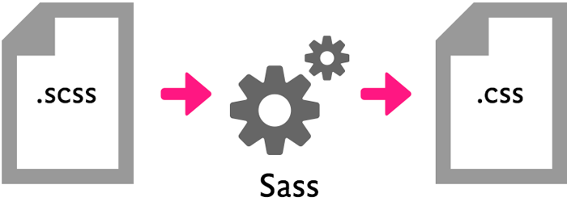

Syntactically
Awesome
Style
Sheets
En deux mots
SASS est un préprocesseur (preprocessor)

En deux mots compréhensibles
Nouvelle manière d'écrire des feuilles de style.
- Syntaxe
- Fonctionnalités
- ... et beaucoup plus
Principe
- Création de fichier avec une nouvelle syntaxe
- Compilation des fichiers SASS
- Génération d'un fichier css "normal"
En 3 bouts de code
- Variables
- Imbrication
- ... et beaucoup plus
Variables
CSS
div#contenu {
background-color: #FF9900;
}
SASS
$couleur : #FF9900;
div#contenu {
background-color: $couleur;
}
Imbrication
CSS
div#contenu {
width : 100%;
}
div#contenu p {
color : red;
}
SASS
div#contenu {
width : 100%;
p {
color : red;
}
}
SASS - SCSS
Une technologie, deux syntaxes
SASS
- Un preprocesseur
- Une syntaxe
Syntaxe SASS
- Sensible à l'indentation
- Moins verbeuse
- Moins de ponctuation
Syntaxe SCSS
- Semblable à la syntaxe CSS
- Moins déroutante
- Utilisée par défaut avec compass
SASS
ul
width : 100%
li
color : red
list-style : none
SCSS
ul {
width : 100%;
li {
color : red;
list-style : none;
}
}
Étape 1
Pré-requis : ruby
Windows : Téléchargement de Ruby Installer sur rubyinstaller.org
Instalation de Sass
Dans le terminal taper :
gem install sass
Compilation d'un fichier
Dans un terminal :
$ sass test.scss:test.css
watcher
Dans un terminal :
$ sass --watch test.scss:test.css
>>> Sass is watching for changes. Press Ctrl-C to stop.
write test.css
write test.css.map
Watcher
Surveiller plusieurs fichiers
$ sass --watch style/scss:style/css
Structure de controle
@each - SCSS
@each $icon in home,user,mail {
.icon-#{$icon} {
background-image: url('image/#{$icon}.png');
}
}
Structure de controle
@each - CSS
.icon-home {
background-image: url("../image/home.png");
}
.icon-user {
background-image: url("../image/user.png");
}
.icon-mail {
background-image: url("../image/mail.png");
}
Le sélecteur &
Référence au sélecteur parent
a {
/*tous les liens*/
&.externe {
/*liens avec la classe "externe"*/
}
&:hover {
/*tous les liens au roll-over*/
}
}
Exemple